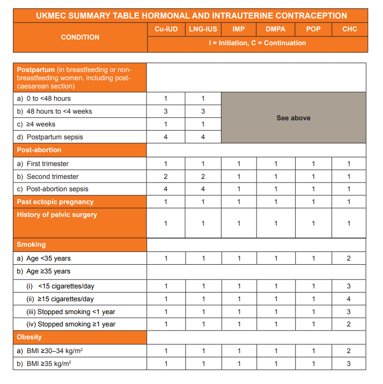
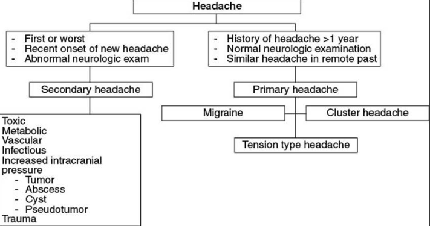

Hello, I'm Dr Nwogu.Welcome to my website where I would be sharing useful revision resources for the SCA(Simulated Clinical Assessment) and AKT(Applied Knowledge Test) RCGP exams. The contents of this website are diagnostic and treatment guidelines collated from several relevant sources.
Feel free to engage and suggest further useful resources. Wish you all the best in your exams.
More resources would be added as we go along.
Gout Management

Longterm Gout Management

Sick Day Rule for Adrenal Patients

Adult Steroid Card

Paediatric Steroid Card

Acne Management

More on Acne Management

p>
Acne Mgt(Wessex NHS)

Adult Asthma Management

Paediatric Asthma Management

More on Asthma Management

Hypertension Diagnosis

Hypertension Management

COPD Management

Management of Adrenal Crisis

QRISK 3

HRT Options

HRT Decision Aid

More on HRT/Menopause

Progestogenic Effects of Several progestogens

Hyperthyroidism Treatment Algorithm

UKMEC For Contraception Choices




Chronic Heart Failure Diagnosis

Chronic Heart Failure Management

Emergency Contraception Algorithm

More on Emergency Contraception

Cow Milk Protein Allergy Algorithm

More on cow milk protein Allergy

And More on cow milk protein Allergy

Bedwetting In Children

More on Bedwetting In Children

Diabetes: Choosing First Line Treatment

Diabetes: Choosing Further Treatment

More on Diabetes Mellitus Management

Diabetic Drugs


Management of Rosacea

Management of Reflux in Formula-Fed Babies

Management of Reflux in Breast fed Babies

More on Reflux in Babies

Lab Diagnosis of Lyme Disease

Centor Scoring For Pharyngitis

FEVERPAIN Scoring For Pharyngitis

Anaphylaxis Treatment Before/During Hospital Transfer

Adrenaline/Epinephrine Dosing in Anaphylaxis

ABCD2 Score for Stroke/TIA

Treament of Suspected Meningococcal Meningitis Before/During Hospital Transfer

Treatment of Unstable Angina/NSTEMI before/During Hospital Transfer

Treatment of STEMI before/During Hospital Transfer

Treatment of Seizure before/During Hospital Transfer

Treatment of Croup before/During Hospital Transfer. Oral Prednisolone is an Alternative

Treatment of Hypoglycaemia before/During Hospital Transfer


Contraindications to Sildenafil(Phosphodiesterase-5 Inhibitors) Use

Just In Case Medications For Palliative Care

Care of The Dying Patient

Adult psoriasis Management Algorithm

Paediatric psoriasis Management Algorithm

Well Score for DVT

Well Score for Pulmonary Embolism

2WW Referral Criteria for Suspected Bowel Cancer

qFIT(Quantitative Faecal Immunochemical Test)

2WW Referral Criteria for Suspected Breast Cancer

2WW Referral Criteria for Suspected Lung Cancer

2WW Referral Criteria for Suspected Melanoma

2WW Referral Criteria for Suspected Haematological Cancer

Ottawa Rule for Knee Injury-Deciding whether to xray or not

Ottawa Rule for Ankle Injury-Deciding whether to xray or not

Canadian Head CT Rule(Head Injury)

Primary and Secondary Fracture Prevention(Osteoporosis)

Migraine Management Algorithm

Treatment of Ulcerative Colitis Flare

Depression Matched-Care Model

Management of Acute Alcohol Withdrawal(Alcohol Detox)

Paracetamol Overdose

Headache Assessment
